Ada Programlama Dili Temelleri
Bölüm 2
Başlangıç Bilgileri
Bölüm 2 Sayfa 2
2.9 - Literaller
Literaller, (Fr Lettre harf, Lat. Litteratura dilbilgisi, yazılı bilgi) program listelerinde değerlerin atanacakları veri tiplerine uygun kodlarda belirtilmesidir. Ada programlama dilinde literaller sözel veya sayısal olabilirler. Literaller çoğunlukla değişkenlerin başlangıç değerlerini belirtmek i çin kullanılırlar.
2.9.1 Sözel Literaller
Sözel literaller tek karakterlerden oluşan Karakter Literalleri ve birden çok karakter içerebilen karakter dizisi (String) literalleri olarak iki türlüdür.
Karakter literalleri, tek karakterden oluşan atomik verilerdir. Bu literaller, tek tırnak arasında , örnek olarak 'd' şeklinde kullanılır. Karakter literallerinin BNF diyagramları,
character ::= graphic_character | format_effector | "other control function"
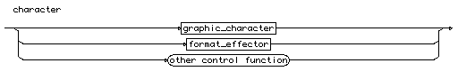
Bunlardan sadece grafik karakterler, karakter literallerinde kullanılabilirler. Diğerler,
format_effector ::=
"HT horizontal tabulation"
| "VT vertical tabulation"
| "CR carriage return"
| "LF line feed"
| "FF form feed"
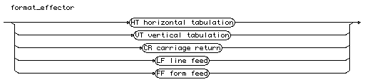
olarak tanımlanır ve Ada RM de değil, derleyicinin kullanma tarifnamesinde belirtilir. Bunlar alfabetik karakterler arasında değildir. Kullanıcının üzerinde durması gerekmez. Kullanılabilecek grafik karakterlerin BNF diyagramı,
graphic_character ::= identifier_letter | digit | "SPACE" | "ISO_10646 BMP character"
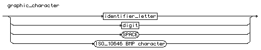
Bu bilgilerden anlaşılabileceği gibi, hertürlü tanımlayıcı karakteri, yanı büyük ve küçük alfabetik karakterler (Unicode destekli olduğundan Türkçe dahil), boşluk ve Unicode tanımlı tüm karakterler, bu arada, bağlaç gibi özel işaretler kullanılabilir. Alışılmış karakterlerin dışına çıkılmak istendiğinde, derleyici kullanma kataloğunun incelenerek sadece müsaade edilebilen karakterlerin kullanılmasına dikkat edilmesi gerekir. Örnek olarak, 'Ğ', 'ö', 'I', 'İ' geçerli karakter literalleridir.
Ada programlama dilinde, String verileri, karakter dizisi, yani, elemanları karakter verilerinden oluşan tek boyutlu diziler olarak kabul edilirler. Bu çok basit tanım, karakter dizilerinin çalışılmasını son derece kullanışlı hale getirir. Karakter dizisi literalleri, çift tırnak (Quotation Mark) arasında gösterilirler. Karakter dizisi literallerinin BNF ifadesi,
string_literal ::= "{string_element}"
string_element ::= "" | non_quotation_mark_graphic_character
Bu tanım çok ilginçtir, çünkü bilinen karakter değerlerinden başka ardarda iki çift tırnak, tek karakter sayılır. Yani, "Bu yüce dağa ""Ilgaz Dağı"" adı verilmiştir." geçerli bir karakter dizisidir ve yazdırıldığında, Bu yüce dağa "Ilgaz Dağı" adı verilmiştir. cümlesini yazdıracaktır. Yine, """Adana""" tuhaf fakat geçerli bir karakter dizisidir ve "Adana" olarak algılanacaktır. Genelde, "Portakal Bahçeleri" gibi basit karakter dizigisi literalleri kullanılır.
Karakter dizisi literallerinin karakterleri arasında satırbaşı karakterinin kullanılmamasına dikkat etmek gerekir. Satırbaşı karakteri derleyicinin kullanma kılavuzundan bulunmalıdır.
2.9.2 Sayısal Literaller
Sayısal literaller temelde tamsayı ve noktalı sayı literalleri olarak iki türlüdür. Her tür kendi içinde, on temelli sayı literlleri( desimal) ve 2 den 16 ya kadar değişebilen temelli literaller olarak ikiye ayrılır. Genelde, desimal literallerin dışında, en çok 2 temelli (binary), 8 temelli (oktal) ve 16 temelli (hex) literaller kullanılır. Derleyiciler için varsayılan sayı temeli on (desimal) sayı temelidir ve bu gündelik yaşamda kullanılan sayı temelidir, fakat Ada derleyicisi diğer temelden literalleri de desimal sayılar gibi aynı kolaylıkla kullanır.
On temelli sayılar, Ada derleyicisinin varsayılan sayı temelidir. On temelli sayıların,
2.9.2 Sayısal Literaller
Sayısal literaller temelde tamsayı ve noktalı sayı literalleri olarak iki türlüdür. Her tür kendi içinde, on temelli sayı literlleri (desimal) ve sayı temelleri 2 den 16 ya kadar değişebilen sayısal literaller olarak ikiye ayrılır. Derleyiciler için varsayılan sayı temeli on (desimal) sayı temelidir ve bu gündelik yaşamda kullanılan sayı temelidir, fakat Ada derleyicisi diğer temelden literalleri de desimal sayılar gibi aynı kolaylıkla kullanır.
Sayısal literallerin Backus-Naur (BNF) diyagramları aşağıda görülmektedir.
numeric_literal ::= decimal_literal | based_literal
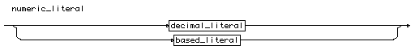
decimal_literal ::= numeral [ "." numeral ] [ exponent ]
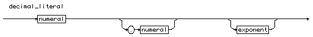
numeral ::= digit { [ "_" ] digit }
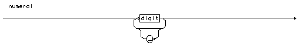
exponent ::= ( "E" [ "+" ] numeral ) |
( "E" "-" numeral )
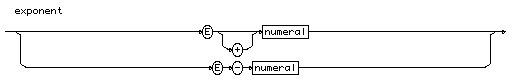
based_literal ::= base #" based_numeral "#" [ exponent ]
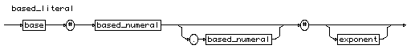
based_numeral ::= extended_digit { [ "_" ] extended_digit }
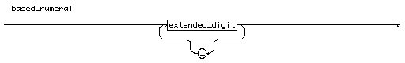
extended_digit ::= digit | "A" | "B" | "C" | "D" | "E" | "F"
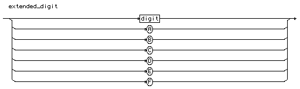
İlk diyagramı incelersek, bir sayısal literalin yani on temelli (desimal) veya sayı temeli belirtilmiş bir değer olacağı anlaşılabilir. Yine buradan görüldüğü gibi, eğer sayı temeli açıkça belirtilmememişse, Ada derleyicisinin bir sayısal literali on temelli (desimal) bir değer olarak algıladığı anlaşılır. Bu doğaldır, çünkü gündelik yaşamda kullanılan sayı sistemi on temelli (desimal) sayı sistemidir (deka Grekçe on demektir, buradan Latinceye geçmiştir).
İkinci diyagram on temelli bir sayısal literali açıklamaktadır. Bu sayısal literal, sayısal bir kısım ve onu izleyen isteğe bağlı bir ondalık noktası, onu izleyen bir başka sayısal kısım ve yine isteğe bağlı bir üstel kısımdan oluşmaktadır. Henüz sayısal kısmın (numeral) fiziksel yapısı üzerine açıklayıcı bir bilgi verilmemiştir.
Sayısal kısmın fiziksel yapısı üçüncü diyagramda açıklanmaktadır. Sayısal kısım, bir sayı ile başlayacak ve bunu izleyebilen istendiği kadar tekrar edebilen isteğe bağlı bir alt bağlaç ve onu izleyen isteğe bağlı bir başka sayıdan oluşabilecektir. Bu tanım ile üstel olmayan bir sayısal literalin yapısı belirlenmektedir. Geçerli on temelli sayısal yapılanmalar,
28536 , 7, 76.8, 28_536
değerleridir. Sayısal literallerde, alt bağlaç (_) bir ayrım işareti olarak işareti olarak kullanılabilir. Ada derleyicisi, sayıyı algılarken bu işareti gözönüne almaz. Bu şekilde,
28_516
olarak girilen bir sayı, Ada derleyicisi tarafından yine 28516 olarak algılanır. Alt bağlaç sadece binler hanesini belirten bir ayrım işareti olarak kabul edilir ve bu işaret sayısal literalin değeri algılanırken gözönüne alınmaz.
Sayısal literallerin üstel kısımların yapısı dördüncü diyagramda açıklanmıştır. Burada, üstel kısmın, E harfini izleyen isteğe bağlı bir artı işareti ve sayısal bir kısım veya E harfini izleyen bir eksi işareti ve sayısal kısımdan oluşacağı açıklanmıştır. Bu şekilde,
2.863_645_2E6 ve 4.67E-6
geçerli on temelli üstel sayısal literallerdir.
Birinci diyagramda, sayısal literallelerin ondan farklı temelli sayılardan da oluşabileceği açıklanmıştır. Bu tür yapılanmalar beşinci diyagramda açıklanmıştır. Bu diyagrama göre, sayı temelindan sonra bir kare (#) işareti, sonra genişletilmiş sayısal bir kısım, isteğe bağlı bir nokta ve bunu izleyen bir genişletilmiş sayısal kısım, sonra yine bir kare işareti ve üstel kısım gelmektedir.
Genişletilmiş sayısal kısmın anlamı bir sonraki diyagramda açıklanmıştır. Bu diyagrama göre, genişletilmiş sayısal kısım ya sayılardan veya A dan E ye kadar alfabetik karakterlerden oluşabilecektir.
Sayı temeli belirtilmiş olan sayısal literallerin üstel kısımları da yine aynı ondalıklı üstel sayılar gibi kendi genişletilmiş sayı sistemleri ile belirtilebilecektir.
Bu şekilde farklı temell, sayılar sadece Ada programlarında bu şekilde kolaylıkla programlara aktarılabilmektedir. Burada dikkat edilecek durum, Ada programlarında, başka temelli olarak veriien sayıların, Ada derleyicisinde desimal değerlere çevrilerek kullanıldığıdır. Örnek olarak,
2#01001#, 8#23145.16#, 16#A1#
değerlerinden ilki geçerli iki temelli, (ikili) (binary) tamsayı literali , ikincisi sekiz temelli (oktal) (Grekçe sekiz) bir ondalıklı sayı literali, üçüncüsü onaltı temelli (hex) bir tamsayı literalidir. Daha çok iki temelli (ikili), sekiz temelli (oktal) ve özellikle onaltı temelli (hexagésimal) (hex) sayılar kullanılır.
2.10 - Atama İşlemi
Ada programlama dilinde atama işleminin BNF ifadeleri :
assignment_statement ::= variable_name ":=" expression ";"
variable_name ::= name
olarak tanımlanmıştır.
Bu tanıma göre, değişken isimleri olarak geçerli tüm tanımlayıcılar kullanılabilir. Geçerli atama işlemleri,
Ali := 28.6;
veya
Ilk_Deger := 12_56_48;
olabilir.
2.11 - Object (Nesne) Bildirimleri
Ada programlama dilinde tüm program öğeleri önceden tanıtılmış olmalıdır. Bir prosedür içinde kullanılacak tüm öğeler daha önce tanıtılır. Kullanılacak değişken ve sabitlerin adları ve tipleri ve varsa öndeğerleri bildirimler bölümünde açıklanır ve değerleri prosedür içinde belirlenir. Tanımlanmış bir veri tipinin uygulanacak örneğine bir nesne adı verilir. Örnek olarak Integer veri tipinde bir değişken tanımı bir tamsayı nesnesini (Integer Object) tanımlar. Nesnelerin tanımlanması için Ada 2102 spesifikasyonunda belirtilen sözdizimi aşağıdaki gibidir.
object_declaration ::=
defining_identifier_list : [aliased] [constant] subtype_indication [:= expression];
| defining_identifier_list : [aliased] [constant] access_definition [:= expression];
| defining_identifier_list : [aliased] [constant] array_type_definition [:= expression];
| single_task_declaration
| single_protected_declaration
defining_identifier_list ::=
defining_identifier {, defining_identifier}
Eğer bir nesne, constant saklı sözcüğünü içeriyorsa bir sabiti aksi halde bir değişkeni tanımlar. Tanım sırasında := işlemcisi bu nesnenin bir öndeğeri (varsayılan değeri) olduğunu belirtir. Varsayılan değerler, sonucu belirli bir ifade olarak da verilebilirler. Ada programlama dili, hiçbir nesneye açıkça tanımlanmadıkça bir varsayılan değer vermez. Sadece bellek referans (access) tipi nesnelerin başlangıç değerleri null olarak kabul edilir. Bir sabit tanımında öndeğer belirtilmiş ise bu bir tam sabit (full constant) tanımıdır. Eğer öndeğer verilmemişse bu bir geciktirilmiş (deferred) sabit anlamına gelir. Geciktirilmiş sabitler ileride incelenecektir.
Nesnelerin tanımlanması sırasında, aynı satırda birden çok nesne virgülle ayrılarak beliritilebilir. Bu nesnelerin herbiri aynı tanım ve öndeğeri paylaşır.
Örnek olarak,
k : constant := 9.81;
Dosya_Numarası : Integer range 0 .. 3000;
geçerli nesne tanımlarıdır. İlk tanım tam bir sabiti ikinci tanım bir tamsayı alt veri tipini tanımlamaktadır. Program uygulamaları yapıldıkça nesne tanımı örrnekleri de görülecektir.
2.12 - Nesnelerin Yeniden Adlandırılması
Ada yoğun bir yeniden yapılandırma mekanizmasına sahiptir, paket , değişken,sabir dizi tipleri sorunsuz olarak yeniden adlandırılabilirler. Nesnelerin yeniden adlandırılması için Ada 2102 spesifikasyonunda belirtilen sözdizimi aşağıdaki gibidir.
renaming_declaration ::=
object_renaming_declaration
| exception_renaming_declaration
| package_renaming_declaration
| subprogram_renaming_declaration
| generic_renaming_declaration
Burada nesnelerin yeniden adlandırılabilmesini sağlayan bildirim renames saklı sözcüğüdür.
Nesnelerin yeniden adlandırılması,
object_renaming_declaration ::=
defining_identifier : [null_exclusion] subtype_mark renames object_name;
| defining_identifier : access_definition renames object_name;
Hata ifadesi (Exception) değerinin yeniden adlandırılması,
exception_renaming_declaration ::= defining_identifier : exception renames exception_name;
Paketlerin yeniden adlandırılması
package_renaming_declaration ::=
package defining_program_unit_name renames package_name;
Alt programların yeniden adlandırılması
subprogram_renaming_declaration ::=
[overriding_indicator]
subprogram_specification renames callable_entity_name;
Generiklerin yeniden adlandırılması,
generic_renaming_declaration ::=
generic package defining_program_unit_name renames generic_package_name;
| generic procedure defining_program_unit_name renames generic_procedure_name;
| generic function defining_program_unit_name renames generic_function_name;
Yeniden adlandırılmalarda, az sayıda bazı kısıtlmalar ve sakıncalar Ada 2102 spesifikasyonunda belirtilmiştir. İleride yapacağımız program örneklerinde, çeşitli program öğelerinin yeniden adlandırılması örnekleri görülecektir.
Ada programlarında, program öğelerinin yeniden adlandırılması, programın okunurluğunu önemli ölçüde azaltabilir. Bu nedenle bu yöntemin aşırı kullanılmaması sağlık verilmektedir.
2.13 - Yorumlar
Yorumlar bir satırın herhangibir yerinden ardarda iki bağlaç (--) ile başlar ve satır sonuna kadar devam eder. Satır aşan Yorum satırları yoktur. Yorum içeriği, satır sonu karakteri dışında her karakterde oluşabilir. Derleyici yorum içeriğini değerlendirmez. Yorumlar sadece kullanıcıya bilgi verilmesi veya hatırlatma amacı ile yazılır. Ada Reference Manual, ISO/IEC 8652:201z Ed. 3 de Yorum satırının BNF ifadesi,
comment ::= --{non_end_of_line_character}
olarak verilmiştir. Örnekler,
end program; -- Program Sonu Çap := 3.5;-- Kazan çapı (m)
2.14 - Pragma Bildirimleri
Pragma bildirimi bir derleyici direktifidir ve ancak çok özel koşullarda başvurulur. Pragma bildiriminin BNF tanımı,
pragma ::= pragma identifier [(pragma_argument_association {, pragma_argument_association})]; pragma_argument_association ::= [pragma_argument_identifier =>] name | [pragma_argument_identifier =>] expression
olarak belirtilmiştir. Ayrıca çeşitli derleyiciler kendilerine özel sözyazımı (sentaks) olan pragma bildirimleri de tanımlayabilirler. Öntanımlı Pragma bildirimlerinin listesi Ada Reference Manual, ISO/IEC 8652:201z Ed. 3 Annex - L de verilmiştir. Bu bildirimler çok özel olduklarından ve ancak uygulanan programlarda gereksinme olduğunda veya derleyiciyi uyarmak amacı ile kullanılırlar. Örnek,
pragma Optimize(Off); -- İsteğe Bağlı Optimizasyonu İptal Eder.
2.15 - Ada Veri Sistemi
Ada çekirdek programlama dili (Core Language) veri sistemi tanımlamaz. Ada veri sistemi, her programın derlenmesi sırasında çalışan Standard paket tarafından oluşturulur.
Standard paketin çalışması sonunda oluşan veri sistemi, kullanıcılara hiçbir programlama dilinde sunulmayan sayıda veri tipi kullanma olanağı sağlar. Bu olağanüstü geniş öntanımlı veri tipleri yanında, kullanıcılar bu öntanımlı veri tiplerinin kapsamı kendi belirledikleri değer sınırları içinde olacak yeni alt veri tiplerini de tanımlama olağına sahiptir. Bu şekilde öntanımlı veri tiplerine dayalı sonsuz sayıda kullanıcıya özgü alt veri tipi üretilebilmektedir.
Aşağıdaki şemada, Ada veri tiplerinin olağanüstü genişlikteki evreni, şematik olarak açıklanmaktadır.
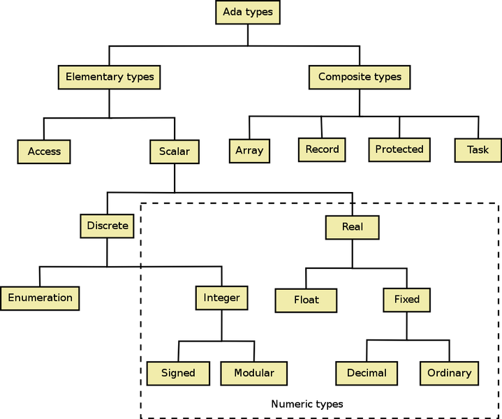
2.15- Şekil- 1 Ada Veri Tipleri (Wiki books)
Yukarıdaki şekilde, ana hatları açıklanmaya çalışılan Ada veri sistemi ilk bakışta karmaşık gibi görülebilirse de, dikkatli incelendiğinde basit fakat olağanüstü kapsamlı olduğu görülür. Gerçekten, günümüzde hiçbir üst düzey bilgisayar programlama dili, Ada da olduğu kadar ayrıntılı bir veri sistemine sahip değildir.
Ada programlama dili, daima tanımlı öğelerden yeni öğeler yaratılması ile gelişir. Veri istemleri de basit ve bileşik veriler olarak ikiye ayrılır. Bileşik veri tipleri, basit tiplerin biraraya toplanmaları ile oluşturulur. Basit veri tipleri ise, Access ve Skaler veri tipleri olarak ikiye ayrılır. Access veri tipleri, ileride inceleyeceğimiz bellek işeretçileri (pointer) tipi verilerdir. İkinci tür veri tipleri, başlangıç için daha önemli olan, skaler veri tipleridir. Skaler sözcüğü, latince scala dan kaynaklanır. Ölçüt anlamına gelen bu sözcük, Türkçeye Skala, İskele gibi sözcüklere geçmiştir. Matematikte tek boyutlu verilere skaler adı verilir.
Skaler verileri bir taraftan Ayrık (Discrete) ve Ayrık Olmayan (Real) veriler olarak ikiye ayrılırlar. Fakat daha anlamlı bir ayrım, kesikli çizgilerle açıklanan Matematiksel ve Ayrık (Discrete) veriler şeklindeki bir ayrımdır. Ayrık veriler Tamsayılar, sayılabilir nesneler gibi, birbirinden ayrılabilen değerlerdir. Bu konun matematikte karşılığı (Ayrık Matematik) (Discrete Mathematics) kavramıdır. Ayrık Veriler sözel veya sayısal olabilir. Sözel olan ayrık veriler, sayılabilen (enümeratif) değerler olarak adlandırılan 'mavi', 'kırmızı', 'beyaz' ... gibi, sözcük sıralarıdır. Ayrık matematiksel veriler tamsayı türleridir. Ayrık olmayan veriler, sadece matematik verilerdir ve bunlar tamsayı olmayan değerleri kapsar. Gündelik yaşamda bunlara ondalıklı sayılar adı verilir. Ada programlama dili sadece on temelli (decimal) tamsayı olmayan verileri destekler. Bu nedenle, tamsayı olmayan büyüklükler, ondalıklı sayılar olarak tanımlanabilir.Ada programlama dilinde tamsayı olarak 2 (binary) den 16 (hex) temeline kadar sayı temelleri ile çalışılabilir.
Matematiksel olan ayrık türler, Tamsayı ve Sayılabilir (Enumeration) türleridir. Tamsayılar 1 den sonsuza kadar tanım alanı olan pozitif adlı küme, 0 dan sonsuza kapsam alanlı olan doğal (natural) tamsayı kümesi ve eksi sonsuz artı sonsuz arası kapsam alanı olan İşaretli Tamsayı (Signed Integer) tipi ve bunların alt türleridir. Üst ve alt sınırlar çalışılan sistemin desteleyebildiği değerler ile sınırlanmıştır.
Tamsayı türlerinden modüler türler periyodik türlerdir. Az kullanılan bu türler, üst sınıra ulaştığında yeniden alt sınırdan başlar ve bir sınır aşımı (constraint error) hatası oluşturmaz.
Tamsayı olamayan tipler arasında en çok kullanılanılan , ondalık sayısı değişen Float veri tipidir. Ondalık sayısı sabit olan Fixed veri tipi fazla kullanılmaz.
Bileşik tipler arasında diziler (Array) veri sıralarıdır.
Record adı verilen veri toplulukları bir isim altından toplanmış çeşitli veri tiplerinden oluşur. Bu veri toplulukları, C++ deki struct yapılanmalarına karşı gelirler. Tagged olarak tanımlanmış record tipleri, Java sıonıflarına benzer ve nesne yönelimli programlama için yararlanılır.
Protected ve Task tipi veriler özel çalışmalar için kullanılır.
Tanımlanmış bir veri tipinin (type) uygulanabilir ilk alt tipi (subtype) kendisidir. Yani, tip tanımı sadece bir tanımdır. Bu tanımın uygulanabilir ilk örneği, bu tipin ilk alt tipi olarak kabul edilir. Bir tipin ilk alt tipinin özellikleri tip tanımında belirtilen özelliklerdir.
Ada Standard paketinde tanımlanmış veri tipleri kullanıcılar tarafından bir isim verilerek yaratılmadıklarından anonim (adsız) tipler olarak nitelendirilirler.
Ada veri tiplerine uygulanabilen işlemciler, aşağıdaki tabloda verilmiştir. (Richard Riehle "Ada Distilled..")
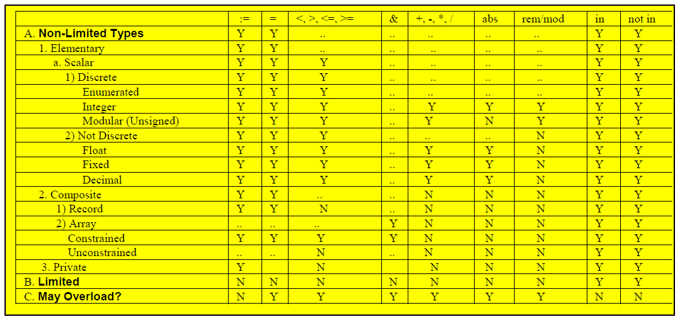
2.16 - Nitelikler (Attributes)
Ada programlama diline özgü bir özellik, verilerin öntanımlı nitelikleri olmasıdır. Nitelikler bir tür hazır fonksiyonlar gibi düşünülebilir. Verilere uygulanan nitelikler, kullanıcılara yararlı bilgiler sağlarlar ve programlara kolaylık getirirler. Nitelikler aşağıdaki BNF gösterimine uygun olarak düzenlenir ve kullanılırlar.
Verilere uygulanabilecek olan nitelikler, Ada 2012 spesifikasyonu Annex K (informative) de Language-Defined Attributes adı ile verilmiştir. Annex K aynı şekilde ek-4 de de verilmiştir. Ada programlama dilinde tanımlanmış çok sayıda nitelik bulunmakta ve tümü bu listede açıklanmaktadır. Bu niteliklerin bazıları çok spesifiktir ve ancak çok özel amaçlar için yararlı olabilirler. Bazıları ise çok genel amaçlıdır ve uygulamalarda geniş ölçüde kullanılırlar.
Her tanımlı nitelik her veri tipine uygulanamaz. Nitelikler ancak kendilerine uygun veri tiplerine uygulanabilirler. Tanımları uygulanabilecekleri veri tipleri hakkında fikir verir. Örnek olarak S'First (S: Scalar) skaler veri tiplerine A'Length (A: Array) diziler için uygulanabilir niteliklerdir.
Veri sitemleri ile çalışmalarımız ilerledikçe, verilere uygulanabilecek nitelikleri daha yakından tanıyacak ve programlarımızda gerekli olduğunda, kolaylıkla uygulayabileceğiz.